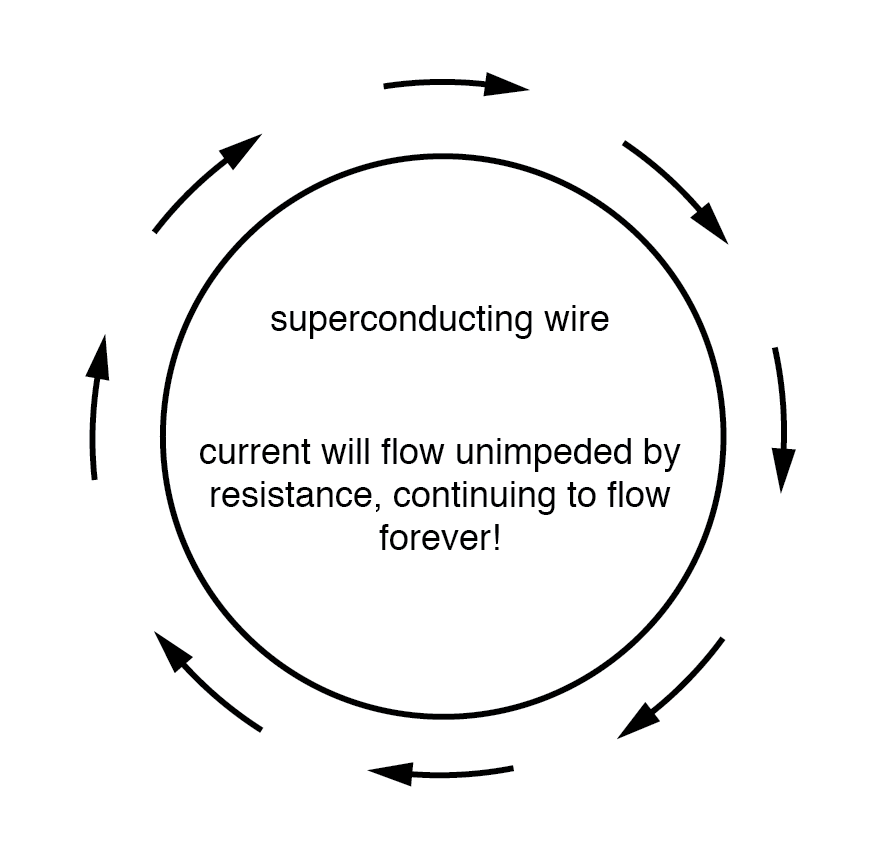

Conductors lose all of their electrical resistance when cooled to super-low temperatures (near absolute zero, about -273° Celsius). It must be understood that superconductivity is not merely an extrapolation of most conductors’ tendency to gradually lose resistance with decreasing temperature; rather, it is a sudden, quantum leap in resistivity from finite to nothing. A superconducting material has absolutely zero electrical resistance, not just some small amount.
Superconductivity was first discovered by H. Kamerlingh Onnes at the University of Leiden, Netherlands, in 1911. Just three years earlier, in 1908, Onnes had developed a method of liquefying helium gas, which provided a medium with which to supercool experimental objects to just a few degrees above absolute zero. Deciding to investigate changes in electrical resistance of mercury when cooled to this low of a temperature, he discovered that its resistance dropped to nothing just below the boiling point of helium.
There is some debate over exactly how and why superconducting materials superconduct. One theory holds that electrons group together and travel in pairs (called Cooper pairs) within a superconductor rather than travel independently, and that has something to do with their frictionless flow. Interestingly enough, another phenomenon of super-cold temperatures, superfluidity, happens with certain liquids (especially liquid helium), resulting in frictionless flow of molecules.
Superconductivity promises extraordinary capabilities for electric circuits. If conductor resistance could be eliminated entirely, there would be no power losses or inefficiencies in electric power systems due to stray resistances. Electric motors could be made almost perfectly (100%) efficient. Components such as capacitors and inductors, whose ideal characteristics are normally spoiled by inherent wire resistances, could be made ideal in a practical sense. Already, some practical superconducting conductors, motors, and capacitors have been developed, but their use at this present time is limited due to the practical problems intrinsic to maintaining super-cold temperatures.
The threshold temperature for a superconductor to switch from normal conduction to superconductivity is called the transition temperature. Transition temperatures for “classic” superconductors are in the cryogenic range (near absolute zero), but much progress has been made in developing “high-temperature” superconductors which superconduct at warmer temperatures. One type is a ceramic mixture of yttrium, barium, copper, and oxygen which transitions at a relatively balmy -160° Celsius. Ideally, a superconductor should be able to operate within the range of ambient temperatures, or at least within the range of inexpensive refrigeration equipment.
The critical temperatures for a few common substances are shown here in this table. Temperatures are given in kelvins, which has the same incremental span as degrees Celsius (an increase or decrease of 1 kelvin is the same amount of temperature change as 1° Celsius), only offset so that 0 K is absolute zero. This way, we don’t have to deal with a lot of negative figures.
| Material | Element/Alloy | Critical temp.(K) |
|---|---|---|
| Aluminum | Element | 1.20 |
| Cadmium | Element | 0.56 |
| Lead | Element | 7.2 |
| Mercury | Element | 4.16 |
| Niobium | Element | 8.70 |
| Thorium | Element | 1.37 |
| Tin | Element | 3.72 |
| Titanium | Element | 0.39 |
| Uranium | Element | 1.0 |
| Zinc | Element | 0.91 |
| Niobium/Tin | Alloy | 18.1 |
| Cupric sulphide | Compound | 1.6 |
Superconducting materials also interact in interesting ways with magnetic fields. While in the superconducting state, a superconducting material will tend to exclude all magnetic fields, a phenomenon known as the Meissner effect. However, if the magnetic field strength intensifies beyond a critical level, the superconducting material will be rendered non-superconductive. In other words, superconducting materials will lose their superconductivity (no matter how cold you make them) if exposed to too strong of a magnetic field. In fact, the presence of any magnetic field tends to lower the critical temperature of any superconducting material: the more magnetic field present, the colder you have to make the material before it will superconduct.
This is another practical limitation to superconductors in circuit design, since electric current through any conductor produces a magnetic field. Even though a superconducting wire would have zero resistance to oppose current, there will still be a limit of how much current could practically go through that wire due to its critical magnetic field limit.
There are already a few industrial applications of superconductors, especially since the recent (1987) advent of the yttrium-barium-copper-oxygen ceramic, which only requires liquid nitrogen to cool, as opposed to liquid helium. It is even possible to order superconductivity kits from educational suppliers which can be operated in high school labs (liquid nitrogen not included). Typically, these kits exhibit superconductivity by the Meissner effect, suspending a tiny magnet in mid-air over a superconducting disk cooled by a bath of liquid nitrogen.
The zero resistance offered by superconducting circuits leads to unique consequences. In a superconducting short-circuit, it is possible to maintain large currents indefinitely with zero applied voltage!

Rings of superconducting material have been experimentally proven to sustain continuous current for years with no applied voltage. So far as anyone knows, there is no theoretical time limit to how long an unaided current could be sustained in a superconducting circuit. If you’re thinking this appears to be a form of perpetual motion, you’re correct! Contrary to popular belief, there is no law of physics prohibiting perpetual motion; rather, the prohibition stands against any machine or system generating more energy than it consumes (what would be referred to as an over-unity device). At best, all a perpetual motion machine (like the superconducting ring) would be good for is to store energy, not generate it freely!
Superconductors also offer some strange possibilities having nothing to do with Ohm’s Law. One such possibility is the construction of a device called a Josephson Junction, which acts as a relay of sorts, controlling one current with another current (with no moving parts, of course). The small size and fast switching time of Josephson Junctions may lead to new computer circuit designs: an alternative to using semiconductor transistors.
REVIEW: